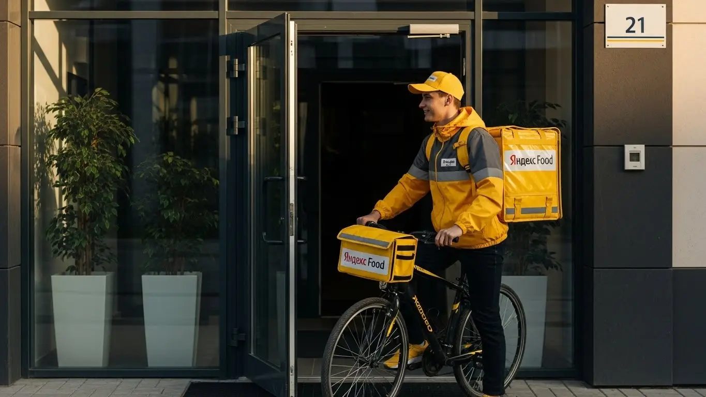
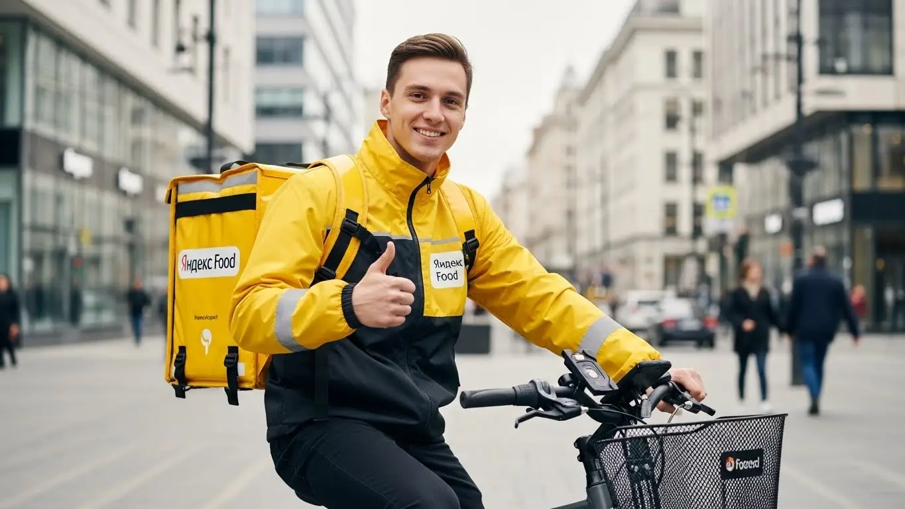
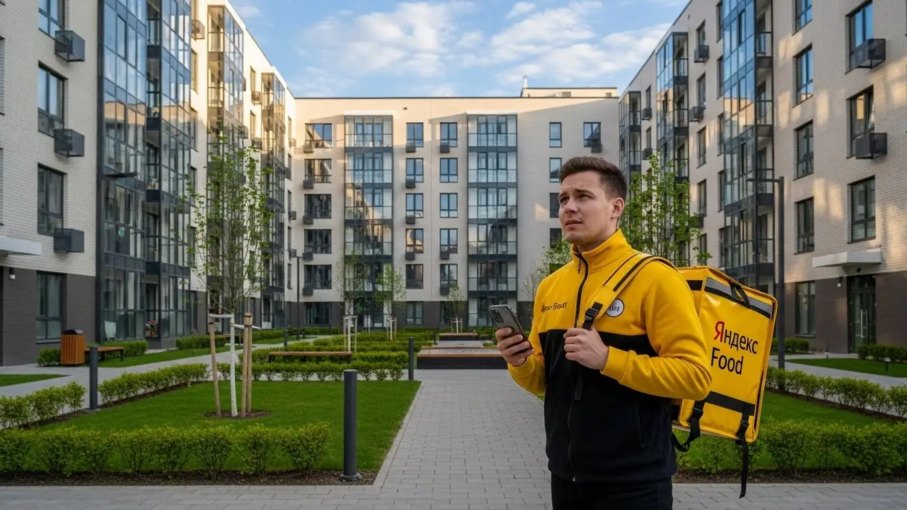
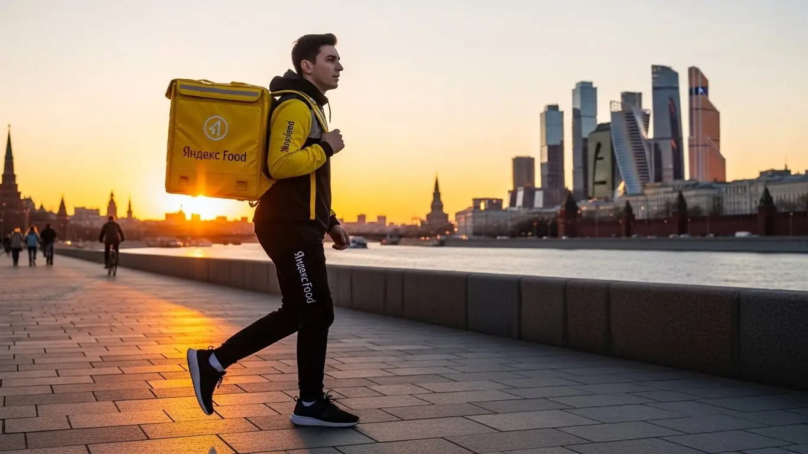
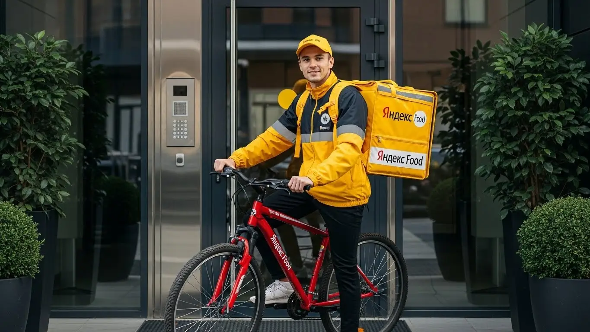

Доход курьера Яндекс Еда в Колпино 2025-2026: разбор условий

- Работа курьером Яндекс Еды в Колпино: для кого эта вакансия и что вы получите
- Сколько вы будете зарабатывать курьером в Колпино: калькулятор дохода и разбор выплат
- Реальный заработок курьера в Колпино: смены и месячный доход
- График работы и форматы занятости
- Требования к кандидату и документы
- Самозанятость, налоги и юридическая чистота
- Пошаговое оформление и первый выход на линию в Колпино
- Пешком, на вело или на авто: что выгоднее в Колпино
- Районы, маршруты и «топовые» зоны заказов в Колпино
- Безопасность, страховка, штрафы и оплата простоя
- Плюсы и возможные минусы работы курьером в Колпино
- Реальные истории и отзывы курьеров из Колпино
- Ответы на главные вопросы о работе курьером Яндекс Еды в Колпино
- Короткие ответы на главные вопросы
- Заключение: твой старт в Колпино
Все города
Здорово, будущий коллега. Думаешь, работа курьером Яндекс Еды в Колпино — это просто сел на велик, включил приложение и гребешь деньги лопатой? Как бы не так. Ты уже прикинул, что будешь делать в час пик в пробке на проспекте Ленина, сколько реально останется в кармане после вычета бензина и как не «убить» подвеску на наших дорогах за пару месяцев? Я здесь, чтобы рассказать тебе не про красивые цифры из рекламы, а про реальную работу в нашем городе, с нашими особенностями, ветрами и спросом.
Поверь, большинство новичков у нас в Колпино сдуваются в первый же месяц. И не потому, что работа тяжелая, а потому что никто им не объяснил «внутрянку»: как налоги съедают часть дохода, как рейтинг влияет на количество заказов, и почему в одном районе ты будешь сидеть без дела, а в другом — не успевать развозить. Чтобы сразу оценить свои шансы и увидеть актуальные цифры, загляни на официальную страницу, где есть калькулятор и форма заявки: работа курьером Яндекс Еда в Колпино. Не зная местной специфики, легко совершить пару глупых ошибок, потерять время, деньги и всякое желание продолжать.
Здесь мы по-честному, без воды, всё разложим. Мы посчитаем, сколько реально можно заработать в Колпино пешком, на велосипеде и на авто. Разберём, в каких районах и в какое время самые «жирные» заказы. Я покажу на примерах, как погода, праздники и даже пробки у Ижорского завода влияют на твой итоговый чек. И главное — расскажу, за что на самом деле прилетают штрафы и как их избежать, чтобы работа была в плюс, а не в минус.
Меня зовут Алексей. Я сам не один год откатал с желтым рюкзаком по нашему городу, а сейчас держу небольшой таксопарк-партнер и вижу всю эту кухню изнутри. Я знаю, где срезать путь, когда лучше выходить на смену и какие ошибки совершает каждый второй новичок. Так что давай по порядку, без рекламной шелухи и розовых очков. Сейчас всё разложу по полочкам.
Но прежде чем нырять в детали, давай быстро пробежимся по ключевым моментам в формате короткого гида — так тебе будет проще ориентироваться в статье.
Что ты точно узнаешь из этого разбора
В этой статье ты ТОЧНО узнаешь:
- Сколько реально можно заработать в Колпино за смену пешком, на велосипеде и на авто, уже за вычетом расходов?
- В каких районах Колпино — от центра до Новой Ижоры — самые выгодные заказы и как ловить пиковые часы с высокими коэффициентами?
- За что на самом деле снижают рейтинг или могут заблокировать, и как работает страховка, если что-то случится на смене?
- Что такое самозанятость, сложно ли её оформить и сколько налогов придётся платить с дохода?
- Что выгоднее для Колпино: работать пешком в центре, на велосипеде по спальникам или на авто по всему району и пригородам?
- Что делать, если заказов мало, и как работает «оплата простоя», чтобы не сидеть на смене бесплатно?
А если тебе некогда читать всю статью — переходи сразу к заключению, где ты найдёшь короткие ответы на все эти вопросы и указания, в каких разделах искать подробности.
А чтобы сразу увидеть общую картину по доходам и условиям, вот наглядная инфографика.
Работа курьером в Колпино: ключевые цифры
Доход в час
400–550 ₽
В часы высокого спроса с учетом бонусов и коэффициентов.
За смену (8 часов)
3 200–4 400 ₽
Средний заработок, который зависит от дня недели и погоды.
Чаевые от клиентов
+15-20%
Дополнительно к доходу. Полностью остаются у курьера.
Оптимальный формат
Велокурьер
Лучший баланс скорости и расходов для районов Колпино.
Работа курьером Яндекс Еды в Колпино: для кого эта вакансия и что вы получите
Кому подойдёт эта работа в Колпино
Эта работа, по сути, универсальна. Если тебе нужны деньги здесь и сейчас и ты не хочешь проходить месяцы собеседований — это твой вариант. Вакансия идеально подходит студентам местных колледжей и техникумов, которым нужна подработка после пар. Также это отличный старт для тех, у кого пока нет опыта работы — здесь всему научат, а требования к кандидатам минимальны.
Многие ребята используют доставку в Яндекс Еда как основную работу, потому что ценят свободный график. Ты сам решаешь, когда выходить на линию, а когда устраивать выходной. Это удобно и для водителей, которые хотят дополнительно загрузить машину, и для тех, кто ищет временный заработок. Главное — желание двигаться и зарабатывать, а ежедневные выплаты станут хорошей мотивацией.
Главные преимущества для жителей районов Новая Ижора, Заводской, Простоквашино
Ключевой плюс работы курьером в Колпино — возможность доставлять заказы буквально в своём дворе. Тебе не нужно тратить час-полтора на дорогу до центра Питера. Если ты живёшь, например, в Новой Ижоре, то можешь брать заказы из местных магазинов и кафе, развозя их по своему же району. То же самое касается и старых районов, вроде Заводского, где много и жилых домов, и точек общепита.
Жителям микрорайона Простоквашино и прилегающих кварталов тоже удобно — заказов хватает, а все улицы знакомы. Ты не теряешь время и ресурсы на поездки в незнакомые места. Достаточно выйти из дома, включить приложение «Яндекс Про», взять первый заказ и поехать. Это экономит и силы, и деньги, позволяя за то же время выполнить больше доставок.
Краткое обещание по доходу и условиям
Давай по-честному: в Колпино доход курьера может составлять 2500–4000 рублей за полную смену (8–10 часов), если работать с головой. Если нужна подработка на 3–4 часа в день, то рассчитывай на 1000–1800 рублей. В месяц при полной занятости зарплата выходит в среднем от 60 000 до 90 000 рублей, а у самых активных автокурьеров и больше.
Основные условия работы просты: свободный график, который ты сам составляешь в приложении, и ежедневные выплаты на карту для самозанятых. Опыт работы не требуется — всему научат на коротком онлайн-инструктаже. Ты просто заполняешь анкету, получаешь доступ к заказам и начинаешь зарабатывать без начальников и жёстких рамок.
Вот живой пример: У меня работает парень, студент Ижорского колледжа. Живёт в центре Колпино. Он выходит на линию на велосипеде после учёбы, примерно в 16:00, и катает 4-5 часов по вечерам. Его зона — это в основном центр города, от бульвара Трудящихся до улицы Веры Слуцкой. За вечер у него выходит в среднем 1500-2000 рублей. В выходные он работает по 8 часов и может привезти домой 3500-4000 рублей за день. Говорит, что это идеальный вариант, чтобы и на учёбу время оставалось, и свои деньги были.
Краткий вывод: Работа курьером в Яндекс Еда в Колпино — это доступная и гибкая подработка или основной способ заработка для всех, от студентов до водителей. Главные плюсы — возможность работать рядом с домом, свободный график и быстрые ежедневные выплаты. Чтобы начать, не нужен опыт, только желание работать.
Сколько вы будете зарабатывать курьером в Колпино: калькулятор дохода и разбор выплат
Из чего складывается доход курьера
Твой заработок — это не просто фиксированная ставка, а конструктор из нескольких частей. Во-первых, это базовая оплата за каждый выполненный заказ. Во-вторых, доплата за расстояние — чем дальше везти, тем больше денег. В часы пик (вечера, выходные, плохая погода) включаются повышающие коэффициенты, которые могут умножить стоимость заказа в 1.5–2 раза.
Кроме того, есть бонусы за выполнение определённого количества заказов в день или неделю. Не стоит забывать и про чаевые — благодарные клиенты часто оставляют их прямо в приложении, и все 100% идут тебе.
Важное преимущество работы в Яндексе — это оплата простоя. Если ты на плановом слоте, а заказов мало, сервис всё равно начислит минимальную гарантированную сумму. А для пеших курьеров на дальних маршрутах может быть компенсация проезда на общественном транспорте.
Как пользоваться калькулятором дохода
На странице с вакансией обычно есть калькулятор — это удобный инструмент, чтобы прикинуть свой будущий доход. Пользоваться им просто. Сначала выбери свой город — Колпино. Затем укажи тип доставки: пеший курьер, на велосипеде или на своем авто.
Дальше выстави, сколько часов в день и сколько дней в неделю планируешь работать. Например, 4 часа 5 дней в неделю для подработки или 8 часов 6 дней для полной занятости. На основе этих данных система покажет тебе примерный диапазон заработка за день и за месяц. Цифры там усреднённые, но дают вполне реальное представление о том, на что можно рассчитывать.
Прикинь свой примерный доход в Колпино
Твой примерный доход в месяц:
72 000 ₽
Примерно 3 600 ₽ в день
Это примерный расчёт на основе средней ставки для Колпино. Реальный доход зависит от спроса, бонусов и твоего способа передвижения.
Этот калькулятор даст общее представление, а чтобы увидеть самые актуальные условия и требования для нашего города, загляни на официальную страницу. Там же найдёшь подробный FAQ и сможешь сразу подать заявку. Вот ссылка: работа курьером Яндекс Еда в твоём городе.
Примеры расчёта для пешего, вело- и автокурьера в Колпино
Давай на конкретных примерах.
- Пеший курьер: Работает в центре Колпино, в радиусе 1-2 км. Берёт короткие заказы из кафе на Пролетарской улице. График — 4 часа в день, 5 дней в неделю. Его средний доход будет в районе 1200–1600 рублей за смену или около 25 000–30 000 рублей в месяц.
- Велокурьер: Более мобильный, может обслуживать заказы между центром и спальными районами, например, от ТК «Меркурий» до Новой Ижоры. При графике 6-8 часов в день его заработок составит уже 2500–3200 рублей за смену. В месяц это 55 000–70 000 рублей.
- Автокурьер: Самый высокий потенциал дохода. Он берёт дальние заказы по всему Колпинскому району, например, в посёлок Тельмана или Понтонный, работая с Яндекс Еда и Яндекс Доставка. Особенно выгодно работать в плохую погоду и в выходные, когда коэффициенты максимальные. При полной занятости такой курьер на своем авто может зарабатывать 4000–5500 рублей в день и выходить на 90 000–110 000 рублей в месяц до вычета расходов на бензин.
Сравнение типов курьеров в Колпино
| Параметр | Пеший курьер | Велокурьер | Автокурьер |
|---|---|---|---|
| Примерный доход в день | 1200–2000 ₽ | 2500–3500 ₽ | 3500–5500 ₽ |
| Оптимальные зоны | Центр, плотная застройка | Спальные районы, центр | Весь город, пригороды |
| Плюсы | Нет расходов, фитнес | Скорость, нет пробок | Комфорт, дальние заказы, высокий доход |
| Минусы | Низкая скорость, усталость | Зависимость от погоды, физ. нагрузка | Расходы на топливо и амортизацию |
Вот ещё один реальный случай: Один из моих водителей, назовём его Сергей, работает автокурьером в Колпино по вечерам и в выходные. Его основная работа — в промзоне, график сменный. Когда у него выходной, он выходит на линию с 12:00 до 22:00. Он специально выбирает зоны с высоким спросом в приложении «Яндекс Про», часто стоит у крупных гипермаркетов вроде «Ленты» или «Окея». В прошлую субботу был дождь, коэффициенты горели фиолетовым. За 10 часов он сделал 22 заказа и заработал 5800 рублей грязными. После вычета бензина (около 600 рублей) у него осталось 5200 рублей чистыми за один день.
Краткий вывод: Твой заработок курьером в Колпино напрямую зависит от способа передвижения, количества часов на линии и умения ловить моменты высокого спроса. Не бойся пробовать разные форматы: начни с пеших прогулок по своему району, а если понравится — пересаживайся на велосипед или авто, чтобы зарабатывать больше. Главное — понимать, что твой доход в твоих руках.
Реальный заработок курьера в Колпино: смены и месячный доход
Давай к главному — к деньгам. Никаких рекламных обещаний, только цифры из практики по нашему Колпино. Доход курьера — это не фиксированный оклад, а результат твоей активности, скорости и умения ловить момент. Сколько ты вложишь времени и сил, столько и получишь. Но есть чёткие ориентиры, от которых можно отталкиваться.

Диапазон дохода для подработки и полной занятости
Если ты ищешь подработку на 2–4 часа в день, чтобы закрыть кредит или просто иметь карманные деньги, цифры будут одни. Если готов работать как на полноценной работе по 8–10 часов, то совсем другие. В Колпино ситуация такая: город компактный, но заказы есть всегда, особенно из новых жилых комплексов и центра.
Для подработки (2-4 часа в день, 20-22 дня в месяц):
- Пеший или велокурьер: В среднем выходит 800–1500 рублей за смену. За месяц это может быть 18 000 – 33 000 рублей. Отличный вариант для студентов после пар или как дополнение к основной зарплате.
- Автокурьер: Здесь доход выше за счёт скорости и возможности брать дальние заказы, например, в Тельмана или Металлострой. За 3-4 часа можно сделать 1500 – 2500 рублей «грязными» (до вычета бензина). В месяц это 30 000 – 50 000 рублей.
При полной занятости (8-10 часов в день, 20-22 дня в месяц):
- Пеший или велокурьер: Стабильный доход в 2500 – 4000 рублей за смену. В месяц получается 55 000 – 88 000 рублей. Это уже полноценная зарплата, требующая выносливости.
- Автокурьер: За полный день можно заработать 4000 – 6500 рублей «грязными». За месяц это выливается в 88 000 – 140 000 рублей. После вычета расходов на топливо и амортизацию чистыми остаётся очень достойная сумма.
Как район, время суток и погода влияют на доход
Твой заработок — это не просто ставка за час. Он постоянно меняется в зависимости от трёх факторов: где, когда и в какую погоду ты работаешь. Поняв эту механику, ты сможешь зарабатывать на 20–30% больше, чем тот, кто катается бездумно.
Главный двигатель твоего дохода — это повышающие коэффициенты. Когда спрос на доставку резко растёт, а курьеров на линии мало, сервис Яндекса начинает доплачивать за каждый заказ. Самые «жирные» моменты — это:
- Время суток: Пики спроса в Колпино стандартные: обеденный перерыв (с 12:00 до 15:00) и вечер (с 18:00 до 22:00). В пятницу вечером и все выходные коэффициенты почти всегда повышены.
- Погода: Дождь, снегопад или сильный мороз — твой лучший друг. Люди не хотят выходить из дома, заказов становится в разы больше, а желающих работать курьеров — меньше. В такие дни можно за 3-4 часа сделать дневную норму. Плюс, в плохую погоду клиенты чаще оставляют хорошие чаевые.
- Район: В центре Колпино, в районе улиц Пролетарская и Тверская, всегда много заказов из кафе. В новых ЖК на Заводском проспекте — из магазинов. Следи за картой спроса в приложении «Яндекс Про» — она подсвечивает «горящие» зоны фиолетовым цветом.
Советы по увеличению заработка от опытных курьеров
Чтобы не просто работать, а именно хорошо зарабатывать, нужно подходить к делу с головой. Вот несколько проверенных советов, которые помогут тебе выжимать максимум из каждой смены без лишних переработок.
Во-первых, всегда планируй свои выходы. Не выходи на линию спонтанно в «мёртвые» часы. Лучше взять короткий слот на 4 часа в пятницу вечером, чем откатать 8 часов впустую в понедельник днём. Выбирай плановые слоты — на них часто действует гарантированный минимальный доход. Даже если заказов будет мало, сервис доплатит до определённой суммы.
Во-вторых, не брезгуй маленькими заказами в зонах с высоким коэффициентом. Иногда выгоднее быстро доставить три небольших заказа с кэфом х1.5 в радиусе километра, чем тащиться с одним большим заказом через полгорода по обычному тарифу. И всегда будь вежлив с клиентами — чаевые могут составлять до 10-15% твоего месячного дохода.
Вот реальный кейс от одного из курьеров на авто в Колпино. Его стратегия: брать слоты с 17:00 до 23:00 со среды по воскресенье, когда самый пик заказов от людей, вернувшихся с работы. Он старается держаться в районах с новостройками, где много молодых семей. В дождь или снег — всегда на линии. В итоге, такая подработка по 6 часов 5 дней в неделю стабильно приносит ему около 80–90 тысяч в месяц чистыми, уже за вычетом бензина.
Сравнение примерного дохода в Колпино (за вычетом налога)
| Формат занятости | Пеший / Велокурьер (в месяц) | Автокурьер (в месяц, чистыми) |
|---|---|---|
| Подработка (4 часа/день, 5 дней/нед) | 25 000 – 40 000 ₽ | 40 000 – 60 000 ₽ |
| Полная занятость (8 часов/день, 5 дней/нед) | 55 000 – 88 000 ₽ | 70 000 – 110 000 ₽ |
В сухом остатке: реальный доход от работы курьером в Колпино напрямую зависит от твоего подхода. Можно получать и 20 тысяч, и 120 тысяч. Главное — не лениться, анализировать спрос и использовать пиковые часы. Мой совет: в первый месяц попробуй выходить в разное время и в разных районах, чтобы нащупать свою золотую жилу.
График работы и форматы занятости
Одно из главных преимуществ этой работы — свободный график. Ты сам себе начальник и сам решаешь, когда и сколько работать. Это не просто красивые слова, а реальная возможность встроить доставку в свою жизнь, а не наоборот. Можно работать по паре часов в день, а можно выходить на полноценные смены.
Подработка после учёбы или основной работы
Формат подработки идеально подходит тем, кто уже занят днём. Студенты, офисные работники, даже молодые отцы, у которых есть несколько свободных часов вечером, — все могут найти для себя удобный график. Система позволяет выходить на линию буквально на пару часов и получать деньги сразу.
Пример первый: студент местного колледжа. Учёба заканчивается в 15:00. Он берёт велосипед и выходит на плановый слот с 18:00 до 22:00, как раз в самый пик вечерних заказов. Работает так четыре будних дня и берёт одну полную смену в субботу. В итоге за неделю набегает 20-25 часов, что приносит ему 8-10 тысяч рублей — отличная прибавка к стипендии.

Пример второй: сотрудник завода с графиком 2/2. В свои выходные он не сидит дома, а садится в машину и выходит на линию как водитель-курьер по 8–10 часов. За два полных дня такая подработка приносит 8–12 тысяч рублей «грязными». В месяц это даёт ему дополнительные 60–70 тысяч к основной зарплате, что позволяет быстрее закрыть ипотеку.
Полная занятость: как выглядит типичный день курьера
Если ты рассматриваешь курьерскую доставку как основную работу, твой день будет более структурированным. Типичный день курьера на полной занятости в Колпино выглядит примерно так:
Выход на линию обычно планируют к 11:00, чтобы захватить первые обеденные заказы. Утром курьер проверяет транспорт, заряжает телефон и пауэрбанк, выходит в приложении «Яндекс Про» на запланированный слот. Первые часы, с 11:00 до 15:00, — это обеденный пик. Заказы идут непрерывно, в основном из кафе в центре и столовых рядом с промзонами.
После 15:00 наступает небольшое затишье. Это хорошее время, чтобы сделать перерыв, пообедать, заправить машину или просто отдохнуть.
Опытные курьеры используют это время для перемещения в спальные районы, так как к вечеру основной поток заказов пойдёт оттуда. С 18:00 и до 21:00-22:00 — второй, самый мощный пик. Это доставка ужинов и продуктов из магазинов. После 22:00 количество заказов снижается, и можно завершать смену.
Как планировать слоты и выходы через приложение «Яндекс Про»
Вся твоя работа строится через приложение «Яндекс Про». Это твой офис, навигатор и кошелёк в одном флаконе. Планирование — ключ к стабильному доходу. В приложении есть два основных режима работы: свободные выходы и плановые слоты.
Свободный выход — это когда ты просто нажимаешь кнопку «На линию» и начинаешь получать заказы. Удобно, если появилось незапланированное свободное время. Но в этом режиме нет гарантий по минимальному доходу.
Плановые слоты — это твой основной инструмент. Ты заранее, за несколько дней, выбираешь в расписании удобные для тебя временные интервалы (например, с 10:00 до 16:00) и район. Плюсы очевидны: сервис видит, что ты выйдешь, и может рассчитывать на тебя, поэтому на таких слотах часто есть бонусы и гарантия минимального заработка. Самое важное — на плановый слот нельзя опаздывать. Приехал в зону вовремя, нажал кнопку — и твой рейтинг в порядке, а система охотнее даёт тебе хорошие заказы.
Вот ещё один кейс. Девушка-студентка работает пешим курьером. Она живёт в новом районе Колпино. Каждое воскресенье она открывает расписание в «Яндекс Про» и бронирует себе слоты на неделю вперёд: по 3-4 часа после учёбы. Она выбирает зону рядом со своим домом, чтобы не тратить время на дорогу. Такой подход обеспечивает ей стабильный поток заказов и предсказуемый доход около 25-30 тысяч в месяц, которые она тратит на свои увлечения и помощь родителям.
В итоге, график — это конструктор, который ты собираешь сам. Хочешь — работай по ночам, хочешь — только по выходным. Главное — подходить к планированию через «Яндекс Про» ответственно. Мой совет: бронируй популярные вечерние и выходные слоты заранее, их разбирают очень быстро.
Требования к кандидату и документы
Многих новичков пугает этап оформления: кажется, что потребуют кипу бумаг и будут проверять под микроскопом. На деле всё гораздо проще. Главное — соответствовать базовым условиям работы и заранее подготовить небольшой пакет документов. Давай разберёмся, что к чему.
Возраст, гражданство и базовые условия
Начнём с основ. Чтобы стать курьером Яндекс Еды, тебе должно быть полных 18 лет. Это строгое правило, связанное с материальной ответственностью и необходимостью заключить официальный договор. Раньше никак.
Второе важное условие — гражданство. Сервис сотрудничает с гражданами Российской Федерации, а также стран Евразийского экономического союза (ЕАЭС). В него входят Армения, Беларусь, Казахстан и Кыргызстан. Если у тебя паспорт одной из этих стран, проблем с оформлением не будет.
Что касается физической формы, то от тебя не требуют олимпийских рекордов. Но ты должен быть готов проводить на ногах (как пеший курьер) или в седле велосипеда по несколько часов. Если планируешь доставлять заказы на машине, то есть работать автокурьером, само собой, понадобятся водительские права и документы на автомобиль. В остальном — обычная выносливость, которой обладает любой здоровый человек.
Какие документы нужны для работы курьером
Чтобы процесс оформления прошёл быстро, собери всё необходимое заранее. Список короткий, и большинство документов у тебя уже есть под рукой.
Вот что понадобится:
- Паспорт. Основной документ для подтверждения личности и возраста. Убедись, что он не просрочен.
- ИНН (Идентификационный номер налогоплательщика). Он нужен для регистрации в качестве самозанятого и уплаты налогов. Если не помнишь свой номер, его можно за пару минут бесплатно узнать на сайте ФНС или через Госуслуги.
- Банковская карта. Нужна личная карта любого российского банка, оформленная на твоё имя. На неё будут приходить выплаты. Подойдёт и дебетовая, и кредитная, главное — чтобы счёт принадлежал тебе.
- Медицинская книжка. Для большинства заказов из ресторанов в Колпино, где еда уже упакована, медкнижка на старте не требуется. Однако её наличие может открыть доступ к заказам из Яндекс Лавки или продуктовых магазинов-партнёров, поэтому со временем её стоит оформить. Это расширит твои возможности для заработка.
Как видишь, ничего сверхъестественного. Стандартный набор, который есть у каждого взрослого человека.
Можно ли работать с 16 лет и какие есть альтернативы
Часто спрашивают, можно ли устроиться в Яндекс Еду с 16 или 17 лет. Отвечаю честно: нет, нельзя. Минимальный возраст для регистрации в сервисе — 18 лет. Исключений здесь не делают. Это связано с юридическими тонкостями: работа предполагает полную материальную ответственность за заказы и денежные средства, а также оформление в статусе самозанятого, что доступно в полной мере только совершеннолетним.
Если тебе ещё нет 18, а подработать хочется, не стоит отчаиваться. Рассмотри другие варианты, которые доступны подросткам в Колпино. Например, можно раздавать листовки, помогать с выгулом собак по объявлениям в местных группах или поискать вакансии промоутера на летний период. Это, конечно, не тот уровень дохода и свободы, как в доставке, но хороший способ заработать первые карманные деньги и набраться опыта. А как только исполнится 18 — добро пожаловать в Яндекс Еду.
Был у меня случай: парень, 19 лет, только переехал в Колпино, снял комнату. Переживал, что с документами будет волокита, а деньги нужны были срочно. Я ему объяснил, что всё просто. Он взял свой паспорт, зашёл на сайт налоговой и за минуту нашёл свой ИНН, который когда-то получал, но забыл. Карта у него была студенческая, от Сбера. В итоге он заполнил анкету вечером, а на следующий день уже был готов выходить на линию. Вся «бюрократия» заняла у него меньше часа.
В общем, условия работы и требования к кандидатам вполне стандартные: возраст от 18 лет, гражданство РФ или ЕАЭС и базовый пакет документов. Главный совет — не откладывай подготовку бумаг, найди свой ИНН и проверь срок действия паспорта заранее, чтобы стать курьером Яндекс Еды и начать зарабатывать максимально быстро.
Самозанятость, налоги и юридическая чистота
Многих пугает слово «самозанятость» и всё, что связано с налогами. Кажется, что это сложно, муторно и непонятно. На самом деле, это самый простой и легальный способ работать на себя, который придумало государство. Для курьера это идеальный формат, который даёт официальный доход без лишней головной боли.
Почему курьеры Яндекс Еды работают как самозанятые
Работа через самозанятость (или, по-научному, налог на профессиональный доход — НПД) — это стандарт для курьеров Яндекса. И это сделано для твоего же удобства и безопасности. Ты не наёмный сотрудник, а независимый исполнитель, партнёр сервиса. Такой формат даёт тебе тот самый свободный график, где ты сам выбираешь, когда и сколько работать.
Главные плюсы самозанятости:
- Это официально. Твой доход полностью «белый». Ты можешь взять кредит в банке, подтвердить свой заработок для получения визы или для любых других целей.
- Никакой сложной бухгалтерии. Тебе не нужно вести отчётность, заполнять декларации и нанимать бухгалтера. Всё происходит автоматически.
- Простота и прозрачность. Ты всегда видишь, сколько заработал и какой налог с этой суммы нужно будет заплатить. Никаких скрытых комиссий или непонятных вычетов.
- Легальность. Ты работаешь в рамках закона, платишь налоги и спишь спокойно, не опасаясь проверок со стороны налоговой службы. Это гораздо надёжнее, чем получать деньги «в конверте».
По сути, самозанятость — это компромисс между полной свободой фриланса и социальной защищённостью официальной работы.
Как за 10 минут оформить самозанятость через «Мой налог»
Регистрация статуса самозанятого занимает не больше времени, чем заказ пиццы. Всё делается онлайн, никуда ходить не нужно. Самый простой способ — через официальное приложение ФНС «Мой налог».
Вот пошаговая инструкция:
- Скачай приложение. Найди в Google Play или App Store «Мой налог» и установи его на свой смартфон.
- Начни регистрацию. Открой приложение и выбери самый удобный способ — «Регистрация по паспорту РФ».
- Отсканируй паспорт. Наведи камеру на главный разворот паспорта. Приложение само распознает все данные. Проверь, чтобы всё было верно.
- Сделай селфи. Приложение попросит тебя сфотографироваться, чтобы подтвердить личность. Просто моргни на камеру, когда появится подсказка.
- Подтверди регистрацию. Выбери свой регион (Ленинградская область) и вид деятельности (например, «перевозка грузов» или «доставка»). После этого нажми «Подтверждаю».
Вот и всё. Через несколько минут тебе придёт уведомление, что ты официально зарегистрирован как плательщик налога на профессиональный доход. Весь процесс действительно занимает 10–15 минут.
Сколько и как платить налоги
Система налогообложения для самозанятых — самая простая из всех существующих. Ставка налога фиксированная и зависит от того, от кого ты получаешь деньги.
Когда ты работаешь с Яндекс Едой, ты получаешь доход от юридического лица. В этом случае ставка налога составляет 6%. Никаких других отчислений — ни пенсионных, ни страховых — делать не нужно. Это и есть твой единственный платёж государству.
Процесс уплаты налога полностью автоматизирован:
- Яндекс через приложение Яндекс Про сам передаёт данные о твоих доходах в налоговую службу. Тебе не нужно формировать чеки вручную.
- До 12-го числа каждого месяца в приложении «Мой налог» появляется квитанция с суммой налога за предыдущий месяц.
- Оплатить этот налог нужно до 28-го числа. Это можно сделать прямо в приложении, привязав банковскую карту.
Кроме того, каждому новому самозанятому государство даёт бонус — налоговый вычет в размере 10 000 рублей. Пока этот бонус не исчерпается, твоя ставка будет временно снижена: 4% вместо 6%. Это приятная поддержка на старте.
Один из моих водителей, который решил подрабатывать автокурьером, долго сомневался насчёт самозанятости. Он привык, что в таксопарке все налоги и отчисления делали за него, и боялся бумажной волокиты. Я сел с ним, и мы вместе скачали «Мой налог». Он был в шоке, когда через 15 минут регистрация была завершена. А когда через месяц он заплатил свой первый налог в два клика, то сказал, что зря боялся. Теперь он сам контролирует свой доход и платит честный, понятный процент.
Итак, самозанятость — это не страшно, а выгодно и удобно. Это даёт тебе легальный статус, официальный доход и минимальные налоги без какой-либо бюрократии. Мой совет: не ищи «серых» схем, проходи официальное оформление. Система сделана так, чтобы быть максимально простой для обычного человека.
Пошаговое оформление и первый выход на линию в Колпино
Многие думают, что устроиться курьером — это долгая история с бумажками и собеседованиями. На деле всё гораздо проще и быстрее, весь процесс отлажен и занимает от нескольких часов до одного дня. Главное — не бояться и просто следовать шагам, которые система сама тебе подсказывает. Весь путь от анкеты до первого заработка можно пройти, не выходя из дома, кроме момента получения экипировки.
Шаг 1–2: анкета и онлайн‑обучение
Всё начинается с простой анкеты на сайте, где нужно указать базовые данные: ФИО, номер телефона и гражданство. Никаких резюме и сопроводительных писем не требуется. После этого система попросит загрузить фото документов для проверки — это стандартное условие для всех кандидатов, которое занимает минимум времени. Бояться этого не стоит: всё официально, а данные защищены.
Как только твои документы проверят, откроется доступ к короткому онлайн-обучению. Это не нудные лекции, а несколько наглядных роликов или слайдов прямо в приложении. Тебе расскажут об основах работы с программой «Яндекс Про», стандартах общения с клиентами и ресторанами, а также о правилах безопасности. В конце будет небольшой тест из нескольких вопросов, чтобы убедиться, что ты всё понял. Если не сдал с первого раза — не беда, можно пересдать.
Шаг 3: получение сумки и доступа к заказам в Колпино
После успешного прохождения теста ты получаешь полный доступ к приложению «Яндекс Про» и становишься активным курьером. Остаётся последний шаг: получить фирменный термокороб. Без него работать нельзя, так как он гарантирует, что еда доедет до клиента горячей, а продукты — холодными. В Колпино есть несколько способов его получить.
Чаще всего это можно сделать в офисе партнёра-таксопарка или в специальном центре для курьеров. Точные адреса и время работы всегда можно посмотреть на карте в самом приложении «Яндекс Про» — система покажет ближайшие к тебе точки. Иногда сумку могут привезти доставкой прямо на дом. Это удобно, так как экономит твоё время и позволяет быстрее выйти на линию.
Шаг 4: первый слот и первый доход
Как только сумка у тебя на руках, можно планировать свой первый рабочий день. В приложении ты увидишь карту Колпино с доступными зонами и слотами — это временные интервалы, на которые можно записаться. Для начала советую выбрать короткий слот на 3–4 часа в своём районе, где ты хорошо знаешь дворы и подъезды. Так будет спокойнее, и ты сможешь освоиться без лишней суеты.
Выбрав слот, ты просто выходишь в назначенное время на улицу, нажимаешь в приложении кнопку «На линии» и ждёшь первый заказ. Система сама найдёт ближайший к тебе и пришлёт уведомление. Тебе останется только следовать инструкциям на экране: забрать заказ из ресторана и отвезти его клиенту. Самое приятное, что сервис предлагает ежедневные выплаты: первые заработанные деньги поступят на твою карту уже в этот же день или на следующий.
Например, мой знакомый парень из Колпино решил попробовать. Утром заполнил анкету, к обеду прошёл обучение. В приложении увидел, что ближайший партнёрский пункт выдачи сумок находится на Заводском проспекте. Забрал короб, вернулся домой, а вечером взял тестовый слот на три часа в своём квартале. Выполнил четыре заказа, особо не напрягаясь, и заработал свои первые 1100 рублей. Говорит, был удивлён, насколько всё просто.
В итоге, весь процесс от регистрации до первого заработка максимально упрощён. Нет никакой бюрократии и сложных экзаменов. Система сделана так, чтобы ты мог начать работать курьером практически сразу, как только принял решение — это отличный вариант для быстрой подработки или основного дохода. Главный совет — не откладывай, а просто начни с короткого слота в знакомом районе, чтобы втянуться.
Пешком, на вело или на авто: что выгоднее в Колпино
Выбор транспорта — одно из ключевых решений, которое напрямую влияет на твой доход и комфорт работы. В Колпино, как и в любом другом городе, у каждого способа передвижения есть свои плюсы и минусы. Важно трезво оценить свои возможности, район, в котором планируешь работать, и то, сколько времени ты готов уделять доставкам. Нет универсально «лучшего» варианта — есть тот, который подходит именно тебе.

Пеший курьер: для центра и плотной застройки в Колпино
Работа пешком — идеальный вариант для старта, если у тебя нет велосипеда или машины. Такой формат не требует вложений, кроме удобной обуви, и отлично подходит для подработки. В Колпино пешая доставка особенно выгодна в центральной части, где много заказов на короткие расстояния — например, в кварталах вдоль проспекта Ленина, улицы Труда и бульвара Трудящихся.
Здесь на небольшом пятачке сосредоточено множество кафе, магазинов и жилых домов. Заказы часто идут «из соседнего дома в соседний». На машине в таких местах больше времени потратишь на поиск парковки, чем на саму доставку. А пеший курьер может срезать через дворы и скверы, доставляя заказ быстро и без лишних затрат.
Велокурьер: быстрые доставки между спальными районами
Велосипед — золотая середина между скоростью и затратами. Велокурьер выполняет заказы значительно быстрее пешего, но не несёт расходов на бензин, как водитель. Для Колпино, где есть и плотная застройка, и протяжённые спальные районы, велосипед — настоящая находка. На нём легко объезжать пробки на Заводском проспекте или улице Обороны в часы пик.
Особенно удобно работать на велосипеде в таких районах, как Новая Ижора, где расстояния между домами и магазинами уже приличные, или в больших жилых массивах между улицей Веры Слуцкой и железной дорогой. Велосипед позволяет быстро перемещаться между разными частями города, брать больше заказов в час и, соответственно, больше зарабатывать. Плюс, это отличный «оплачиваемый фитнес», который держит тебя в форме.
Водитель-курьер: заказы по всему городу и пригороду Тельмана, Понтонный
Автомобиль открывает доступ к самым выгодным и дальним заказам. Если ты планируешь работать полный день и нацелен на максимальный доход, то курьер на автомобиле — твой главный выбор. На машине можно без проблем брать заказы из одного конца Колпино в другой, а также обслуживать ближайшие пригороды, такие как посёлок Тельмана, Понтонный или Металлострой, куда пешком или на велосипеде добираться долго.
Работа на авто особенно выгодна в плохую погоду — в дождь или снегопад количество заказов резко возрастает, а коэффициенты увеличиваются, так как другие курьеры сходят с линии. Кроме того, на машине удобно выполнять крупные заказы из гипермаркетов или доставлять несколько посылок одновременно. Да, есть расходы на бензин и амортизацию, но высокий доход от дальних и дорогих заказов их с лихвой перекрывает.
Сравнение форматов доставки в Колпино
| Параметр | Пеший курьер | Велокурьер | Водитель-курьер |
|---|---|---|---|
| Средний доход в час | Низкий (250–400 ₽) | Средний (400–600 ₽) | Высокий (600–1000+ ₽) |
| Лучшие зоны в Колпино | Центр (пр. Ленина, ул. Труда), плотная застройка | Спальные районы (Новая Ижора), маршруты вдоль проспектов | Весь город и пригороды (Тельмана, Понтонный) |
| Расходы | Минимальные (обувь, одежда) | Низкие (обслуживание велосипеда) | Высокие (бензин, ТО, страховка) |
| Плюсы | Без вложений, фитнес, легко парковаться | Скорость, маневренность, нет пробок, экономия | Максимальный доход, комфорт, дальние заказы |
| Минусы | Низкая скорость, зависимость от погоды, усталость | Физическая нагрузка, сезонность, риск кражи | Расходы на авто, пробки, поиск парковки |
У меня в парке есть водитель, который начинал как пеший курьер в Колпино. Первые пару месяцев работал по 4-5 часов в день в центре, зарабатывал на карманные расходы. Потом купил недорогой велосипед и начал брать смены подлиннее, катаясь по всему городу. Его доход вырос почти вдвое. А через полгода он сел за руль своей старенькой машины и переключился на полную занятость. Теперь он стабильно работает в вечерние пики и выходные, развозит заказы по всему Колпинскому району и в пригород, и его месячный заработок сравним с офисной зарплатой.
В итоге, выбор транспорта и формата работы зависит от твоих целей. Для подработки и старта отлично подойдёт пеший формат или велосипед. Если же ты нацелен на максимальный и стабильный доход, то без автомобиля не обойтись. Мой совет: начни с того, что у тебя уже есть, а дальше смотри по ситуации — возможно, заработав первые деньги, ты решишь вложиться в более быстрый транспорт.
Районы, маршруты и «топовые» зоны заказов в Колпино
Чтобы не кататься вхолостую, а увеличивать свой доход, нужно понимать, где в Колпино «водятся» деньги. Город не такой большой, как Питер, но и здесь есть свои «рыбные места» и «мёртвые зоны». Главное правило простое: заказы появляются там, где есть люди и заведения. Со временем ты начнёшь чувствовать город и интуитивно понимать, куда ехать, но для начала вот основные ориентиры.
Где больше всего заказов: ТРЦ, бизнес-центры и жилые массивы
Самые прибыльные точки — это, конечно, крупные торговые центры. В Колпино их два: ТРК «Меркурий» на Пролетарской и ТЦ «ОКА» на Октябрьской. Здесь сосредоточены фуд-корты, рестораны и магазины, которые активно работают через «Яндекс Еду» и другие сервисы доставки.
В обеденное время (с 12:00 до 15:00) и по вечерам (с 18:00 до 21:00) здесь почти всегда горит «фиолетовый» — то есть действуют повышающие коэффициенты. Если хочешь взять максимум заказов за короткое время, начинай смену рядом с одним из этих ТРЦ.
С бизнес-центрами в Колпино ситуация проще, их не так много. Основной поток корпоративных заказов идёт из промзоны, где расположены Ижорские заводы и другие предприятия. Это в основном обеды, так что пик приходится на будни с 11:30 до 14:00. В хорошую погоду люди также заказывают еду в парки, например, в Парк культуры и отдыха. Это скорее приятный бонус, чем стабильный источник заработка.

Работа в своём районе: примеры для популярных жилых кварталов
Одно из главных преимуществ этой работы — возможность кататься рядом с домом. Не нужно тратить час на дорогу до «топовой» зоны, если у тебя под боком есть свои точки притяжения. Например, если ты живёшь в районе бульвара Трудящихся или улицы Веры Слуцкой, там полно жилых многоэтажек, а значит, и заказов из местных кафе, пиццерий и продуктовых магазинов. Для пешего курьера или велокурьера это идеальный вариант подработки: маршруты короткие, клиентов много.
Другой пример — новые жилые комплексы, такие как «Новое Колпино». Поначалу там может быть не так много ресторанов, но зато активно заказывают доставку из супермаркетов и «Яндекс Лавки». Такие заказы часто бывают объёмными, поэтому здесь удобнее работать на автомобиле. Ты можешь взять несколько доставок в одном ЖК и выполнить их за час, не наматывая лишний километраж по всему городу.
Как выбирать зоны и слоты в «Яндекс Про», чтобы не мотаться впустую
Приложение «Яндекс Про» — твой главный инструмент. В нём есть карта спроса, которая в реальном времени подсвечивает зоны с высоким количеством заказов. Чем темнее цвет зоны (от жёлтого к фиолетовому и красному), тем выше там спрос и, соответственно, повышающий коэффициент к стоимости заказа. Перед началом смены всегда смотри на эту карту и двигайся в сторону «горячих» зон.
Есть два типа смен, что обеспечивает свободный график: свободные и плановые слоты. Свободный — вышел на линию когда захотел и работаешь. Плановый слот ты бронируешь заранее на определённое время и в определённом районе. Плюс плановых слотов в том, что на них часто действует гарантированный минимальный доход. Даже если заказов будет мало, сервис доплатит тебе до определённой суммы.
Мой совет: не гонись за одним заказом с огромным коэффициентом на другой конец города, если после него рискуешь оказаться в «тихой» зоне. Иногда выгоднее сделать три заказа подряд с небольшим «кэфом» в оживлённом районе, чем один, но с долгой дорогой обратно.
Из практики: у меня знакомый курьер на велосипеде работает по вечерам. Он берёт плановый слот на 4 часа в центре Колпино. Стартует от «Меркурия», делает пару заказов оттуда, потом его уводит в жилые кварталы у Ижорского пруда. Он не выезжает за пределы этого «пятачка», выполняя 8–10 заказов за смену. В итоге его доход стабильно составляет 1800–2500 рублей за вечер, не убивая ноги на длинных дистанциях.
В общем, ключ к успеху в Колпино — это знание локальных точек притяжения и грамотное использование карты в «Яндекс Про». Не ленись анализировать, где и когда больше заказов, и твой заработок будет стабильно расти. Начинай с ТРЦ и своего района, а дальше сам поймёшь, где тебе работать комфортнее и выгоднее.
Безопасность, страховка, штрафы и оплата простоя
Работа курьера — это постоянное движение, а значит, есть определённые риски. Важно понимать, что ты не остаёшься с ними один на один. Сервис предоставляет защиту, но и от тебя требуется голова на плечах и соблюдение простых правил. Давай по-честному разберём, что входит в страхование, за что могут наказать и как не терять деньги из-за отсутствия заказов.
Бесплатная страховка на сменах и что она покрывает
Как только ты выходишь на активный слот и начинаешь выполнять заказы, автоматически включается бесплатная страховка твоей жизни и здоровья. Это не пустые слова, а реальная финансовая защита с покрытием до 2 миллионов рублей. Тебе не нужно за неё платить или оформлять какие-то бумаги — всё работает по умолчанию.
Что это значит на практике? Допустим, ты ехал на велосипеде, неудачно повернул и сломал руку. Или, будучи пешим курьером, поскользнулся на льду и получил травму. В таких ситуациях страховка покроет расходы на лечение. Главное — сразу после происшествия связаться со службой поддержки через «Яндекс Про» и сообщить о случившемся. Они дадут чёткую инструкцию, что делать дальше. Это важный момент, который даёт уверенность: в случае чего тебя не бросят.
Правила безопасности на дороге и при доставке
Страховка — это хорошо, но лучше до страховых случаев не доводить. Поэтому вот базовые правила, которые сберегут твои нервы и здоровье. Для пешеходов: всегда переходи дорогу по «зебре», даже если спешишь. Не утыкайся в телефон на ходу. В тёмное время суток носи что-то светлое или с отражающими элементами.
Для велокурьеров: шлем — твой лучший друг. Обязательно используй фонари и катафоты ночью. Помни, что на тротуаре главный — пешеход, а на дороге ты должен соблюдать ПДД. Будь особенно внимателен у выездов со дворов. Для водителей на авто всё стандартно: соблюдай скоростной режим, не отвлекайся на телефон, паркуйся так, чтобы никому не мешать.
В плохую погоду — дождь, снег, гололёд — сбавляй скорость вдвое. Лучше опоздать на 5 минут, чем вообще не доехать. И не забывай про аккуратность с самим заказом: горячий кофе не должен пролиться, а пицца — превратиться в кашу в термокоробе.
Какие бывают штрафы и как их избежать
Давай начистоту: система штрафов или, как это называется в сервисе, «демотивации», существует. Но её цель — не отобрать у тебя деньги, а поддерживать качество сервиса. Штрафы применяют только за серьёзные нарушения. Например, если ты регулярно опаздываешь на плановые слоты, твой рейтинг активности падает, что влияет на доступ к заказам. Могут оштрафовать за испорченный заказ, если ты уронил пиццу или пролил суп по своей вине.
Самые строгие санкции — за грубость с клиентом или сотрудником ресторана, а также за работу без термосумки (термокороба). Этого допускать нельзя. Как всего этого избежать? Элементарно: будь вежлив, аккуратен и ответственен. Если понимаешь, что опаздываешь в ресторан, — предупреди поддержку. Если с заказом что-то не так — сфотографируй и сообщи в чат. 99% проблем решаются через диалог. За несколько лет работы я понял: если ты работаешь на совесть, со штрафами ты не столкнёшься.
Что такое оплата простоя и как она защищает ваш доход
Это одна из ключевых фишек, которая выгодно отличает условия работы в Яндексе от многих других сервисов. «Оплата простоя» — это твоя финансовая подушка безопасности. Представь: ты забронировал плановый слот, приехал в нужный район, вышел на линию, а заказов нет. Такое бывает, например, в середине буднего дня. Чтобы ты не терял время и деньги впустую, система начисляет тебе компенсацию за ожидание.
Работает это автоматически для плановых слотов. Главное — находиться в границах выбранной зоны и иметь статус «активен». Эта система гарантирует, что твой час работы будет стоить определённых денег, даже если спрос временно упал. Это снимает главный страх новичков: «А что, если я выйду на смену и ничего не заработаю?». Здесь ты защищён от таких ситуаций, что делает доход более предсказуемым и стабильным.
Был у меня случай: автокурьер работал в Колпино в сильный снегопад. Заказов было много, но из-за пробок он двигался медленно. Потом на час всё затихло — видимо, люди пережидали непогоду. Он просто стоял в «горячей» зоне. В итоге за этот час ему начислилась минимальная ставка за простой. Смена получилась не самой прибыльной, но он не ушёл в минус и не потратил бензин зря, что уже хорошо.
Итак, твоя безопасность — это сочетание твоей аккуратности и поддержки от сервиса. Соблюдай правила, будь вежлив, и работа будет приносить только доход. А такие вещи, как страхование и оплата простоя, дают уверенность, что даже в непредвиденной ситуации ты не останешься без поддержки.
Плюсы и возможные минусы работы курьером в Колпино
Любая работа, если по-честному, это не только деньги, но и свои особенности. Где-то ты сидишь в офисе и глаза болят от монитора, а где-то — наматываешь километры по городу. Работа курьером в сервисах вроде Яндекс Еды — не исключение. Давай без прикрас разберём, что тебя ждёт в Колпино, чтобы ты понимал, подходит ли тебе такой формат. Это не реклама, а разговор по душам, чтобы потом не было сюрпризов.
Сильные стороны работы курьером в Колпино
Главный козырь этой работы — свободный график. Ты сам себе начальник и сам решаешь, когда выходить на линию. Можно работать пару часов вечером как подработку после основной занятости или учёбы, а можно выходить на полную смену на все выходные. Никто не стоит над душой с планами и отчётами. Твой заработок зависит только от тебя, и это мотивирует.
Второй важный момент — деньги приходят быстро. Забудь про ожидание зарплаты до конца месяца. В Яндекс Еде есть ежедневные выплаты: отработал смену — получил деньги на карту. Всё официально, ведь ты работаешь как самозанятый, так что доход легальный, и ты можешь быть спокоен. Плюс, ты работаешь в своём городе. Живёшь в районе Заводского проспекта — можешь брать заказы там, не тратя время и деньги на дорогу. А ещё есть страховка на время смен и круглосуточная поддержка через приложение Яндекс Про, так что в сложной ситуации тебя не бросят.
С какими сложностями чаще всего сталкиваются курьеры
Теперь о том, к чему надо быть готовым. Во-первых, это физическая нагрузка. Если ты пеший курьер или велокурьер, то за день намотаешь прилично километров. Погода в наших краях тоже не всегда радует: дожди, ветер, снег — всё это станет твоими постоянными спутниками. Решается это просто: хорошая непромокаемая одежда, удобная обувь и термобельё зимой. Не экономь на экипировке, это твоё здоровье и комфорт.
Во-вторых, бывают простои, когда заказов мало. Сидеть и ждать — неприятно, но и тут есть подстраховка в виде минимальной оплаты за время на слоте. Ещё один момент — общение с людьми. Большинство клиентов адекватные, но иногда попадаются и недовольные. Главное правило — сохранять спокойствие, быть вежливым и, если что-то идёт не так, сразу писать в поддержку через Яндекс Про. Они помогут разрулить конфликт.
Кому такая работа подходит, а кому лучше поискать другой формат
Эта работа идеально подходит активным и самостоятельным людям. Если ты не можешь сидеть на одном месте, любишь движение и город — тебе понравится. Это отличный вариант для студентов, которым нужна подработка с гибким графиком, или для тех, кто ищет дополнительный доход без опыта. Если у тебя есть машина, это хороший способ подработки на своем авто, а не только траты на бензин и обслуживание. Главное — самодисциплина и умение самому планировать своё время.
С другой стороны, если ты предпочитаешь стабильность офиса, чёткий график с 9 до 18 и предсказуемые задачи, то работа курьером может показаться хаотичной. Тем, кто не любит физические нагрузки или ненавидит выходить на улицу в плохую погоду, тоже будет тяжело. Подумай честно, что для тебя важнее: свобода и динамика или комфорт и предсказуемость.
Был у меня знакомый, водитель-курьер, работал в основном по вечерам. В первую же неделю попал в затяжной ноябрьский дождь. Расстроился: заказов мало, в пробках стоишь, бензин жжёшь, доход никакой. Я ему посоветовал не лезть в центр Колпино в час пик, а сместить фокус на спальные районы и доставку из крупных гипермаркетов типа «Окея» на Тверской. Люди в такую погоду заказывают много и на большие чеки. Он попробовал, и дело пошло: меньше пробок, больше крупных заказов, выше чаевые. Через месяц уже сам давал советы новичкам.
В общем, работа курьером в Яндекс Еде в Колпино — это свобода и быстрые деньги, но взамен она требует выносливости и умения подстраиваться. Если ты готов к такому компромиссу, то сможешь хорошо зарабатывать. Мой совет: попробуй для начала взять несколько коротких смен в разное время и погоду, чтобы понять, твоё это или нет.
Реальные истории и отзывы курьеров из Колпино
Цифры и условия работы — это одно, а живой опыт — совсем другое. Я собрал несколько отзывов от ребят из Колпино, которые работают в доставке, чтобы ты увидел всё изнутри. Это не выдуманные персонажи, а реальные люди, которые каждый день доставляют заказы по нашим улицам.
История студента Ижорского колледжа, который совмещает учёбу и доставку
«Меня зовут Кирилл, мне 19. Учусь на сварщика, пары заканчиваются в три-четыре часа дня. Живу на улице Веры Слуцкой. Почти сразу после учёбы выхожу на смену как велокурьер, обычно часов до 8-9 вечера. В выходные стараюсь отработать один полный день. Для меня это идеальная подработка: и на карманные расходы хватает, и от родителей не завишу. В среднем за неделю выходит около 9 тысяч рублей. Деньги трачу на свои увлечения и помогаю семье. Главное — научился планировать время, чтобы и на учёбу, и на работу, и на отдых хватало».
Опыт автокурьера, который выходит в пиковые часы
«Я — Виктор, мне 41 год. У меня есть основная работа в сменном графике. Машину использую для подработки в Яндекс Еде, чтобы быстрее закрыть кредит. Выхожу на линию в самые пики: обеденное время с 12 до 15 и вечернее с 18 до 22, плюс активно работаю в выходные. В основном катаюсь по новым кварталам и захватываю посёлок Тельмана, там часто бывают крупные заказы из ресторанов. Такой формат меня полностью устраивает — нет обязательств, выхожу, когда есть время и желание. Дополнительный доход в 25-30 тысяч в месяц к основной зарплате — отличное подспорье».
Мнение велокурьера о работе в центре и спальниках
«Я — Ольга, работаю велокурьером в Яндекс Еде уже полгода. В центре Колпино, в районе бульвара Трудящихся и проспекта Ленина, заказы идут один за другим, особенно из кафе. Но там много людей, приходится быть очень внимательной. В спальных районах, например, в 10-м микрорайоне, спокойнее, но и расстояния между точками могут быть больше. Пришлось привыкнуть, что иногда нужно проехать пару километров до ресторана. Что нравится больше всего — это оплачиваемый фитнес. Я и в форме себя держу, и деньги за это получаю. А ещё открыла для себя много уютных двориков в родном городе, о которых раньше и не знала».
Истории показывают, что в работе курьером от Яндекса каждый находит свой ритм и свою выгоду. Кто-то ценит гибкий график для совмещения с учёбой, кто-то — возможность дополнительного заработка на авто, а кто-то — активность и пользу для здоровья. Главное — понять, какие условия работы подходят именно тебе. Мой совет: не бойся экспериментировать. Попробуй поработать и в центре, и на окраине, в разные часы — так ты быстрее найдёшь свою золотую жилу.
Ответы на главные вопросы о работе курьером Яндекс Еды в Колпино
Собрал здесь ответы на те вопросы, которые мне задают чаще всего. Без воды, только по делу, чтобы у тебя сложилась полная и честная картина.
Нужно ли оформлять самозанятость и как платить налоги?
Да, обязательно. Работа курьером в Яндекс Еде — это официальная деятельность, поэтому все сотрудничают с сервисом как самозанятые. Пугаться этого не стоит: оформление занимает 10 минут через приложение «Мой налог». Ты просто привязываешь карту, и налог в 6% с поступлений от Яндекса будет рассчитываться и списываться автоматически. Никакой бухгалтерии и походов в налоговую. Зато твой доход полностью официален.
Какие документы нужны, чтобы стать курьером?
Пакет документов минимальный: паспорт гражданина РФ (или страны ЕАЭС), ИНН для оформления самозанятости и реквизиты личной банковской карты для выплат. Медкнижка на старте чаще всего не нужна, но её наличие может расширить список доступных заказов.
Какой телефон и интернет нужны для работы курьером?
Ключевой инструмент — это твой смартфон. Он должен быть на базе Android, чтобы приложение «Яндекс Про» работало без сбоев. На айфонах приложение для курьеров не работает. Также критически важен стабильный мобильный интернет и хороший пауэрбанк — GPS и постоянно включённый экран быстро съедают батарею.
Что будет, если в смену мало заказов — как работает оплата простоя?
Это одно из главных преимуществ Яндекса. Если ты вышел на запланированный слот, а заказов в твоей зоне действительно мало, сервис начисляет минимальную гарантированную оплату за час. То есть ты не будешь сидеть бесплатно в ожидании. Эта система защищает твой заработок в «тихие» часы.
Есть ли в Яндекс Еде штрафы и за что их могут применить?
Прямого понятия «штраф» в системе нет, но есть система мотивации и рейтинга. Если систематически нарушать стандарты сервиса — например, грубить клиентам, сильно опаздывать, портить заказы — твой рейтинг будет снижаться. Низкий рейтинг может привести к тому, что тебе будет приходить меньше заказов или доступ к сервису временно ограничат. Если работать нормально и по совести, никаких проблем не будет.
Сколько реально можно заработать курьером в Колпино?
В Колпино при полной занятости автокурьер может зарабатывать в среднем 3500–4500 рублей за смену, велокурьер — 2500–3500 рублей, а пеший — 2000–3000 рублей. Если нужна подработка на 4 часа в день, выходит около 1500–2000 рублей. Главное отличие от других сервисов — это стабильный поток заказов, технологичное приложение «Яндекс Про», а также гарантии, как оплата простоя и страховка на сменах.
Можно ли работать без опыта и что будет на обучении?
Да, опыт работы совершенно не требуется. Перед выходом на линию ты пройдёшь короткое онлайн-обучение. Это несколько видеороликов и небольшой тест. Там расскажут, как пользоваться приложением «Яндекс Про», как правильно общаться с клиентами и ресторанами и действовать в разных ситуациях. Всё просто и понятно, обучение занимает меньше часа.
Берут ли с 16–17 лет и какие есть ограничения по возрасту?
Строго с 18 лет. Таковы требования: работа курьером — это материальная ответственность и работа по договору, который можно заключать только с совершеннолетними. Поэтому, если тебе ещё нет 18, устроиться в Яндекс Еду, к сожалению, не получится.
Короткие ответы на главные вопросы
Собрал здесь самую суть в формате шпаргалки. Если что-то забудешь — заглядывай сюда.
Короткие ответы: главное из статьи по существу
Короткие ответы на ключевые вопросы
Сколько реально можно заработать в Колпино за смену пешком, на велосипеде и на авто, уже за вычетом расходов?
При полной занятости велокурьер может заработать 2500–4000 ₽ за смену, а автокурьер — 4000–6500 ₽ до вычета бензина. Подработка на 3-4 часа принесёт 1000–1800 ₽. Доход сильно зависит от часов, погоды и выбранного транспорта.
→ Подробнее читай в разделе «Реальный заработок курьера в Колпино: смены и месячный доход».В каких районах Колпино — от центра до Новой Ижоры — самые выгодные заказы и как ловить пиковые часы с высокими коэффициентами?
Самые «жирные» зоны — у ТРК «Меркурий» и ТЦ «ОКА», а также в густонаселённых спальных районах. Пиковые часы — обед (12:00–15:00) и вечер (18:00–22:00), особенно в плохую погоду, когда включаются повышающие коэффициенты.
→ Подробнее читай в разделе «Районы, маршруты и «топовые» зоны заказов в Колпино».За что на самом деле снижают рейтинг или могут заблокировать, и как работает страховка, если что-то случится на смене?
Рейтинг падает за регулярные опоздания на слоты, порчу заказов или грубость клиентам, что снижает количество заказов. На время смены действует бесплатная страховка жизни и здоровья с покрытием до 2 млн рублей, которая активируется автоматически.
→ Подробнее читай в разделе «Безопасность, страховка, штрафы и оплата простоя».Что такое самозанятость, сложно ли её оформить и сколько налогов придётся платить с дохода?
Самозанятость — это обязательный и легальный формат работы, который оформляется за 10 минут через приложение «Мой налог». Налог составляет всего 6% с дохода от Яндекса, рассчитывается и уплачивается автоматически, без сложной бухгалтерии.
→ Подробнее читай в разделе «Самозанятость, налоги и юридическая чистота».Что выгоднее для Колпино: работать пешком в центре, на велосипеде по спальникам или на авто по всему району и пригородам?
Пеший формат идеален для центра, велосипед — для быстрых доставок между спальными районами, а авто даёт максимальный доход за счёт дальних заказов по всему Колпинскому району и в пригороды вроде Тельмана и Понтонного. Выбор зависит от ваших целей: подработка или полная занятость.
→ Подробнее читай в разделе «Пешком, на вело или на авто: что выгоднее в Колпино».Что делать, если заказов мало, и как работает «оплата простоя», чтобы не сидеть на смене бесплатно?
Если вы вышли на плановый слот, а заказов нет, сервис начисляет гарантированную минимальную оплату за час ожидания. Это защищает ваш доход в «тихие» часы и гарантирует, что время не будет потрачено впустую.
→ Подробнее читай в разделе «Безопасность, страховка, штрафы и оплата простоя».
Для полного понимания темы рекомендую прочитать всю статью — там ты найдёшь примеры, сравнения и дельные советы из практики.
Заключение: твой старт в Колпино
Краткие выводы по работе курьером в Колпино
Если подвести черту, то вакансия курьера в Яндекс Еде в Колпино — это реальная возможность иметь стабильный заработок от 40 000 до 90 000 рублей в месяц, в зависимости от формата и занятости. Главные плюсы — это полная свобода в составлении графика, ежедневные выплаты и прозрачные условия через самозанятость. В отличие от многих альтернатив, здесь есть страховка на время смен и гарантия минимального дохода, даже если заказов мало. Это делает подработку или основную работу курьером более стабильной и предсказуемой.
Работать можно в своём районе, не тратя время на дорогу до офиса. Для Колпино это особенно удобно, так как заказы есть и в старой части города, и в новых кварталах. Это хороший вариант как для основной работы без опыта, так и для подработки студентам или тем, кто ищет дополнительный доход.
Как сделать первый шаг уже сегодня
Начать проще, чем кажется. Весь процесс от заявки до первого заработка может занять всего один день. Вот что нужно сделать, чтобы стать курьером:
- Заполнить анкету. Это простая онлайн-форма на сайте, займёт не больше 5 минут.
- Подготовить документы. Тебе понадобятся паспорт, ИНН и реквизиты твоей банковской карты для выплат.
- Пройти онлайн-обучение. Посмотришь короткие видео и ответишь на несколько вопросов, чтобы подтвердить, что всё понял.
- Выбрать первый слот. Сразу после активации в приложении «Яндекс Про» ты сможешь выбрать удобный район в Колпино, время и выйти на линию, чтобы выполнить первый заказ и получить первые деньги.